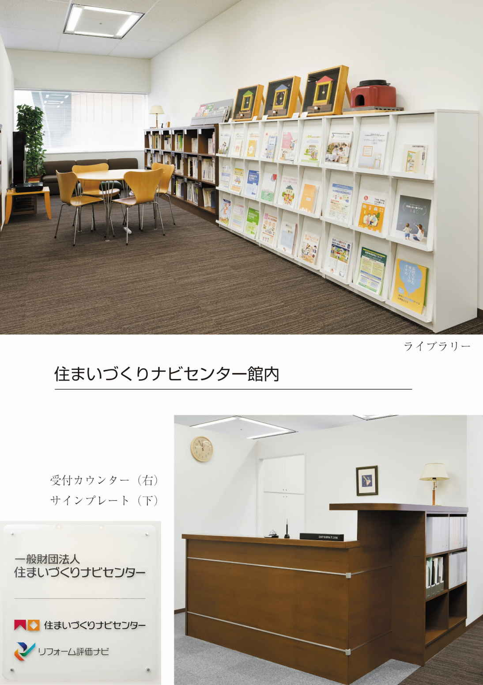
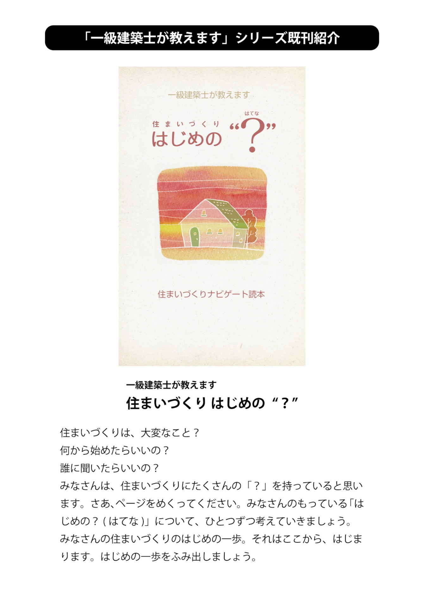

| 一級建築士が教えます 知っててよかった！ 住まいの安心 | |
| 一般財団法人住まいづくりナビセンター | |
| 一般財団法人 住まいづくりナビセンター (2017) | |
はじめに
「早くウチに帰ろう」、「明日は家でのんびりしよう」...だれにとっても、住まいは日々の暮らしを支えるたいせつなもの。
居心地よく、暮らしやすい家はあこがれですよね。
住まいにとって何よりたいせつなのが、安心・安全なものであること。
大きな災害があると、災害対策の特集や報道がされたり、国の法律や基準が対応できるように変わったりします。
たとえば、大型台風が近づいているときには学校が休校になったり、イベントが中止になったりしますが、これは自宅待機を前提としたもの。つまり、ご自宅が"シェルター"であるとも言えるのです。
もちろん、日常的にも安心な住まいであることがまずはたいせつ。
わたしたち住まいづくりナビセンターは、日頃から納得満足のいく、安心安全な住まいづくりの実現をサポートしています。
この本では、子どもも、おとなも、だれもが安心して暮らしやすくあるために知っておきたいことを、住まいづくりのプロがアドバイスをまじえてお話していきます。
さあ、あなたの住まいが安心なものか、チェックしてみましょう。
この電子書籍は 公益財団法人 建築技術教育普及センター 平成２６年度普及事業の助成を受けて作成されたものです。
目次
■ はじめに
第１章
災害に強い住まいとは？
01 地震にそなえる
コラム 家具は動く！倒れる！
02 地震に強い住まい
03 火災にそなえる
04 水害にそなえる
コラム 「そなえ」を日常に取り込む
第２章
犯罪に強い住まいとは？
05 泥棒に入られない家にする
06 狙われない環境づくり
コラム 防犯にも性能があります！
第３章
高齢者にやさしい住まいとは？
07 安全と自立の住まい
09 見える段差と見えない段差
第４章
子育てしやすい住まいとは？
10 ヒヤリ・ハット
11 子どもとの距離感
12 子育てしやすい家
コラム 子どもは段差が好き
第５章
安心に暮らせるまち
13 まち歩き
14 地域コミュニティ
コラム ハザードマップって知ってる？
■ チェックリスト
■ おわりに
■ 執筆者紹介
■ 奥付
第１章 災害に強い住まいとは？
01
地震にそなえる
日本に住む私たちにとって地震対策は必須です。まずは「そなえる」ことで被害をできるだけ防ぐ「減災」からはじめましょう。
●想像してみよう！
大きな地震のとき、家の中はどうなるのか見渡してみましょう。危ない場所は早めに対策を取り、日頃からいざという時に家族みんなの身を守る場所を見つけておきましょう。
大きな揺れを感じたら、まずは身の安全を確保することがたいせつです。落ちてくるもの、倒れてくるものを避けるため、できるだけ頑丈なテーブルや机の下にもぐり、特に頭と目を守りましょう。
また、食事の準備などでキッチンでお湯を沸かしたり、揚げ物をしている場合は、熱湯や油で大やけどをする可能性があるので、すぐにその場を離れましょう。ガス台は揺れによってメーターの安全装置がはたらいてガスが止まり、火も消えます。もしどうしても火災が心配であれば、キッチンに消火器を常設しておくと良いでしょう。揺れがおさまってから、火を消し、ガスの元栓を閉めるようにしましょう。
●割れものはキケン！
キッチンには割れものがたくさんあります。特に食器棚や吊り戸棚の中にガラスのコップや焼き物のお皿といった食器が入っている場合は、地震時にロックが作動して扉が開かないようにする「地震ラッチ」を取り付けておくと良いでしょう。
また、窓や扉のガラスには飛散防止フィルムを貼るのが効果的です。
もし停電になったら、早目にブレーカーを落としてください。復旧したときに漏電や器具の過熱によって火事が起きてしまうことがあるからです。揺れによって自動的にブレーカーを落とすものが市販されていますので、事前に取り付けておくのも良いでしょう。
●揺れがおさまったら...
まずは避難ルートの確保です。玄関や外へ出られる窓までは、安全なルートになりそうですか？
倒れてくるもの、落ちてくるもの、割れそうなものはありませんか？ 廊下に飾った絵や写真、鏡、家具などが揺れて落ちたり、倒れたりすると、扉や窓までたどり着けないかもしれません。
割れそうなものはできるだけ避難ルートに置かない、窓ガラスなどには飛散防止フィルムを貼っておく、倒れそうなものは転倒防止をしておくことがたいせつです。また、余震などで玄関などの扉が歪んで開かなくなる可能性もあるので、揺れがおさまったら、一度扉を開けに行きましょう。
（田中哉子）
第１章 災害に強い住まいとは？
コラム
家具は動く！倒れる！
地震のとき、家の中では重いものほど凶器になります。背の高い棚やテレビなどは、揺れが大きな場合、倒れるというより、「飛んでくる」ことがあります。また、冷蔵庫やキャスターの付いたピアノなどは、床を滑って襲ってくるともいわれます。
さまざまな転倒防止商品や落下防止商品がホームセンターなどで販売されています。倒れやすいテレビやパソコンのモニターの下に敷く粘着性の高いマット、置き家具向けに、壁や天井に固定する留め具などがあります。
もし壁や天井に転倒防止金具を取り付ける場合、少し気を付けることがあります。
室内の壁や天井は「石膏ボード」という柔らかい材で作られていることが多いため、ビスやネジがしっかり止まらずに、大きな揺れでは抜けてしまいます。そのため石膏ボードを固定している下地の「桟（さん）」をめがけて取り付ける必要があります。下地の位置を探す器具もホームセンターなどで販売されています。
また、転倒防止や飛散防止の器具について、助成や取り付け支援を行っている自治体もありますので、お住まいの地域で確認してみると良いでしょう。
（田中哉子）
＜参考HP＞
内閣府 防災シミュレーター
http://www.bousai.go.jp/simulator/index.html
第１章 災害に強い住まいとは？
02
地震に強い住まい
室内の家具対策や避難ルートの確保を準備していても、建物が地震に弱ければモトもコもありません。地震に強い住まいについて考えましょう。
●キーワードは「１９８１年」
建物の耐震基準は、大きな地震を体験するたびにどんどん厳しく改正されてきました。なかでも１９８１年の法律改正では耐震基準が大きく変わりました。そのため、阪神・淡路大震災では、１９８１年以前の建物に倒壊などの被害が集中していたというデータがあります。
ところで、耐震基準とはなんでしょうか？ 一定の強さの地震が起きても倒壊または損壊しないように建築基準法で定められた、建物の構造に関する基準のことです。
１９８１年までの基準では「震度５弱程度の地震ではほとんど損傷しない」こと、それ以降は「震度５程度の地震ではほとんど損傷しないことに加えて、めったにこない大きな地震で倒壊・崩壊しない」ことと定められました。
つまり１９８１年以降の基準では、先の東日本大震災程度の揺れでも「倒壊・崩壊しない」程度の強さがあるということです。
ちなみに「倒壊・崩壊しない」という表現なので建物にダメージがあるかもしれないことが前提にありますが、少なくとも屋内にいる人が倒壊する前に建物から逃げる時間があるということです。
●まずは耐震診断を！
自分の住んでいる家は安全なのだろうか？と不安に思われる方もいらっしゃるでしょう。古い住まいでも「耐震診断」をした後、構造強度を高める「耐震補強」をすることによって、現在の耐震基準レベルの住まいにすることができます。
なお、耐震診断は建築士などの専門家が行っています。また、国も想定されている巨大地震にそなえ、建物の耐震補強を推進しています。
●支援制度があります
耐震診断や耐震補強の費用については、助成制度がある自治体もあります。補強の方法や規模によっては大きな費用が掛かりますので、まずは診断によって「我が家はどの程度の強さなのか」を知ることがたいせつです。
そして、たとえば少なくとも就寝する部屋だけは強くするなど、費用とのバランスをとりながら、できる対策からはじめてください。
（田中哉子）
第１章 災害に強い住まいとは？
03
火災にそなえる
地震・雷・火事・おやじ。昔から怖いものの代名詞になっている火災。火災から命や住まいを守るにはどうすれば良いのでしょうか。
●早く知る
みなさんは、すべての住宅に住宅火災報知器の設置が義務づけられていることをご存知でしょうか。あなたの住まいに火災報知器は設置されていますか？ 設置する場所は、原則として居室（寝室やリビングなど日常的に人が滞在する部屋）と廊下、地域によってはキッチンにも設置が必要です。
住宅火災で命を落とす人の約７０％が６５歳以上の高齢者という数字があります。就寝中の火災に気がつかず、逃げ遅れてしまう事例が多く発生しているそうです。火災から命を守るためには、まず火災報知器によって「早く火災を知ること」がたいせつなポイントになります。
しかし、きちんと火災報知器を設置していても、電池切れなどにより作動しなければなんの意味もありません。できれば毎年、日程を決めて作動確認を行う習慣をつけましょう。
●早く消す
もし、火災が発生してしまっても、消火器をそなえていれば被害を最小限に食い止めることができます。通常の消火器よりも軽くて小さい「住宅用消火器」のほか、高齢者や女性でも扱いやすいスプレー式の「エアゾール式簡易消火具」なども販売されています。もしもの時の安心のためにそなえておくと良いでしょう。
●燃え広げない
死者が発生した住宅火災で、最も多い出火原因は「寝たばこ」。また、調理中の着衣着火による高齢者の死亡事故も少なくないそうです。これは、高齢になると目の水晶体が黄色化することにより、ガスの青い炎が見えづらくなることも一因と考えられます。
発生してしまった火災の被害を拡大させないためには、「燃え広げない」ことが重要です。カーテンやじゅうたん、布団カバー、エプロンなどに燃えにくく火が移りにくい「防炎品」を使用するのも効果的です。
住宅火災報知器はホームセンターや家電量販店などで購入できます。いずれの対策も今の住まいに少しずつプラスすることで、火災にそなえることができます。
最後に！
実際に火災を出してしまったときは、まず１１９番へ通報しましょう。初期消火が間に合わなければ、速やかに避難することもたいせつです。
（田中哉子）
第１章 災害に強い住まいとは？
04
水害にそなえる
地球温暖化の影響からか、最近ではゲリラ豪雨や雷雨が増えています。突発的に起こる浸水対策も考えておきましょう。
● 自分の地域を知る
お住まいの地域では、浸水などの水害が起こったことがあるでしょうか？ 水害は立地や地形などの地域性が大きく影響します。
河川に近い、低地に位置するなど、浸水が起こりやすい地域の家は、基礎や床の高さを高く建てることが多いものです。しかし、最近の突発的な豪雨は想定を超えた雨量をもたらすため、短時間で水位が上がり、床上や床下の浸水が起こりやすくなっています。
また、地下室や半地下がある家の場合、道路より低いために雨水が流れ込んだり、下水道から逆流したりするといった被害が増えています。
●水を入れない対策
対策として、まず玄関や掃出し窓には止水板・防潮板、または土のうを積んで水の流入を防ぎます。浸水が多い地域では、設置の助成制度が設けられていることもあるのでお住まいの自治体などで確認してみてください。
また、逆流してくる水を少しでも抑制するために浴室などの排水口に土のうを積んでおくという方法もあります。
ただし、浸水のおそれがあるときには、とくに地下室や半地下にいては危険です。外の様子がわからず、水圧で扉が開きにくくなると逃げられなくなる場合もあります。
また、浸水してしまった場合も想定して、コンセントのように水につかると使えなくなってしまうものは、最初から床よりも高い位置に取り付けておく、車は高い場所に移動させるなど、早目の対策が有効です。
●津波と高潮
地震の際に海底が動いて発生する津波と、台風など低気圧によって海面が上昇する高潮、どちらも海から水害をもたらすものですが二つは全く動きが違います。
高潮は低気圧の動きによって徐々に海面が高くなるので、対策を講じる→逃げる、ということができます。
一方津波は、波が急激に高くなり、揺れによって水に勢いがつくため、大きな地震が発生したら、すぐに高台に逃げることがたいせつです。
水は生活に欠かせないたいせつなものですが、大量になると人の力では対抗できない大きな破壊力を持っています。
対策を事前に準備しておくこと、そして水害発生時の行動を日頃から考えて決めておくことが何よりもたいせつです。
（青木千枝子）
第１章 災害に強い住まいとは？
コラム
「そなえ」を日常に取り込む
しっかりと準備した防災リュック、でも「中身は何年も変えてないなぁ」という方は結構いるのではないでしょうか。
それに、リュックに入っている非常食についても、実はどんなものなのか実際に試したことのない方も多くいると思います。
防災のための備蓄を特別なものにせず、日常のストックの一環とすることで無駄なく更新するという方法があります。
カップラーメンや飲料水など非常時にも役立つものは、日頃から多めにストックして、どんどん消費する、冬はお鍋で活躍するカセットコンロなども非常時に役立つので、ガスボンベは少し多めにストックしておく、などです。
また「防災ピクニック」と題して 防災リュックの中身について、食べたり、使うことで、事前の点検を推奨する人たちがいます。防災リュックを背負って、公園や河原へピクニック。お弁当の代わりに食べるのは非常食です。中に入っている防災グッズも実際に使ってみましょう。一見、楽しいイベントのようですが、事前に試すことで、感じることや発見があり、改良すべき点もわかるでしょう。
防災リュックをタイムカプセルにしない工夫をしましょう！
（田中哉子）
第２章 犯罪に強い住まいとは？
05
泥棒に入られない家にする
窃盗や空き巣などの侵入犯罪が多様化している昨今。私達ができる防犯対策はどんなものがあるでしょうか？ それは「泥棒に入られない家」をつくることです。
●己の弱点を知る！
あなたが仮に泥棒だとして、自分の家に盗みに入るという視点で家の周りをチェックしてみましょう。どこからが入りやすいかな、どこが死角かな、どこが隠れやすいかな、などなど、客観的に見る事で自分の家の弱点が見えてくると思います。
●泥棒が好きな場所
泥棒気分で家の周りをチェックした時、あなたはまずどこに注目しましたか？ 泥棒が侵入を試みるのは何と言っても玄関や窓の開口部です。
開口部廻りが死角になっていたら、そこは確実に狙われてしまいます。
周囲の建物や道路の状況にもよりますが、新築や建替えで計画する際には、死角にならない位置に開口部を配置するよう、建築士に相談すると良いでしょう。
木々がとっても茂って森のようで癒される♪という庭も危険です。庭の植栽が茂りすぎていると、周囲からの視線をさえぎり、泥棒にとっては最高の隠れ場所になってしまいます。定期的に剪定して御近所からの視線が通るようにしておきましょう。
塀も同様、見通しがよくなるよう格子状にしたり、周囲からも中が見えるような高さにするなどして視線をさえぎらないようにしましょう。
●泥棒が嫌いなもの
泥棒の７０％は、鍵を開けて室内に入るのに５分以上かかる場合、その家に入るのをあきらめるそうです。
玄関ドアの場合、もし鍵が１つしかついていないのであれば、もう１つ追加したり、サッシの窓ガラスに防犯フィルムを貼ったりするなどして、少しでも侵入するのに時間がかかるよう対策しましょう。
夜間の場合は、さらに死角が増えてしまいます。玄関側と違い、勝手口や裏庭などは死角になりがちです。そういった場所には、人の気配に反応して点灯するセンサーライトを設置したり、砂利を敷いて人が歩いたら音が出るようにするなど、光と音を効果的に使いましょう。
そして何よりも忘れてはいけないのは「鍵をかける」こと。ついつい忘れてしまいがちなトイレや浴室の窓の鍵なども、出掛ける際にチェックするのを習慣にして、必ず施錠するようにしてください。せっかくの対策が水の泡にならぬように。
（小林輝子）
第２章 犯罪に強い住まいとは？
06
狙われない環境づくり
住まいで発生する犯罪は、盗みだけではなく、放火、性犯罪など、暮らしを脅かすものばかりです。狙われないためにできることはなんでしょうか？
●まちの環境を整える
犯罪に強い住まいにするためには、家自体が入られにくいことはもちろんですが、まちの環境も重要です。
たとえば住宅が密集していて隣家との間隔が狭いと、裏手に回り込んで身をひそめることができるので、入り込みにくくする対策が必要です。
また、見通しがよくても人通りが少ない場所や、日中留守が多い住宅街などは、人目につきにくく、最も注意が必要です。
さらに、商業施設やマンション、アパートなどの共同住宅が多い地域は、人の出入りが多く、不審者の見分けが困難で、日中不在の家が多いため、人の目が期待できません。このようなまちは、監視力を高めるために防犯カメラを設置しているケースが多く見られます。
●敷地に入らせない
マンションのオートロックなどは、居住者以外を建物に侵入させないためのものですが、その前に、敷地に無断で入らせない対策がたいせつです。
塀やフェンスを設ける場合には、簡単には乗り越えられない高さ、足を掛けたり、踏み台にならない構造、敷地内外からの見通しのよいものにするようにしましょう。生け垣などはすり抜けられる場合があるので注意が必要です。
また、戸建ての場合は玄関前に門扉が付いていないと、すぐに敷地に入られてしまいます。けれども門扉があって鍵がかかる場合でも、手を伸ばして簡単に鍵を外せたり、すぐに乗り越えられたりする高さでは効果がありません。
●近づけない
あやしい人を近づけないためには、地域で協力した取り組みがたいせつです。パトロールや夜回りなどの活動は行政や警察も推奨しています。揃いの上着や腕章をつけた方や、プレートをつけた自転車に乗った方が巡回しているのを見たことがありませんか？
日常的に、自治会など地域の活動や隣近所の付き合いが多い地域では、地域の結束力や防犯意識が高く、不審者は見つかりやすい、逃走しにくいと犯罪者から敬遠されます。
狙われない環境づくりが最大のセキュリティとなりますので、まずはお住まいの地域の状況を確認してみてください。
（小林輝子）
第２章 犯罪に強い住まいとは？
コラム
防犯にも性能があります！
あなたの家は泥棒の手にかかると何分で侵入されてしまうでしょうか？！
住まいにはあなたと家族を守る様々な性能が備わっています。泥棒から家財を守る事も、住まいの性能の一つとして評価されている事を御存知ですか？
家を建てたり買ったりする際に、家の性能を比較・評価する事ができるよう、平成１２年に「住宅性能表示制度」が設けられ、防犯についても評価されるようになりました。その際に使われるのが「CP部品」です。
このマーク、どこかで見た事はありませんか？ CPは「Crime（＝犯罪） Prevention（＝予防）」を略して表記したもので、「防犯」を意味しています。
このマークが付いている部品は「CP部品」と呼ばれ、「侵入に５分以上耐えられる」と評価された防犯性能の高い部品を指します。
あなたのお家の玄関ドアやサッシ、目を凝らしてよ～く見てみてください。CPマークが付いていますか？
とはいえ、CPマークは「安心」の指標にはなりますが、過信は禁物。さらに防犯の性能を追加して二重のロックにしたり、センサーライトをつけるなど、防犯対策を重ねて行う事で、防犯に関心の高い家という事を見せつけましょう。
（金子綾）
第３章 高齢者にやさしい住まいとは？
07
安全と自立の住まい
高齢化が加速する日本、住み慣れたわが家でずっと暮らしていくためには、どのようなことをすればよいでしょうか。
●長く住み続けるには...
歳を重ねても、できる限り自宅で生活したいと考えている高齢者が、安全で自立した生活をおくるためには、バリアフリー住宅が必要になります。こうした住まいは、住宅事情による家庭内事故を減らすためだけでなく、年齢とともに身体機能が低下したり障がいが生じても、変わらず自立した生活を支える役割も果たします。
最近は、標準的にバリアフリー対応している新築住宅やマンションが増えています。どこまで対応するかは様々ですが、将来的に困らないようにすることがたいせつです。
たとえば、手すりが後付けできるように下地材を入れておく、廊下の幅は余裕をもたせる、段差はできるだけなくす、高齢者の生活空間を１階にし、寝室の近くにトイレを設ける、家全体を快適な温度で保てるようにする、などが考えられます。
また、将来介助が必要になった時のために、浴室、洗面所、トイレなどの水回りは隣接させるとともに、介助しやすい広さを確保することもたいせつ。さらに、部屋の出入口や廊下は介助用車いすが通れる寸法にしておくとより良いでしょう。
●ハートがたいせつ！
家そのものを考えるとともに、家族や周りの人たちが、年齢に応じた身体の機能低下などを知っておくこともたいせつです。
高齢者は一般的にデジタル操作や細かい操作、細かな文字や見えにくい色、高い音などが苦手です。また、筋力が低下するためつまずきやすく、転倒しやすいので骨折したり、さらには寝たきりになるということも少なくありません。
家族が気持ちよく暮らしていけるように、さりげなく手伝う気配り＝ハートがたいせつですね。
●バリアフリーリフォーム支援制度
バリアフリーリフォームには様々な支援制度があります。その一つとして、介護保険の要支援・要介護認定を受けている場合に、住宅改修費の支給が受けられます。まず地域のケアマネージャーに相談してみましょう。
その他にも様々な公的支援がありますので、ぜひ専門家に相談して、いろいろな情報を集めて活用しましょう。
バリアフリー体験ができる住宅や施設も各地にあります。体験してみたい方は次を参照してください。
（山本倫子）
＜参考HP＞
体験できるバリアフリーモデル住宅
http://www.jutaku-sumai.jp/elderly/modelhouse.html
関東運輸局バリアフリー体験
http://wwwtb.mlit.go.jp/kanto/page2/barrierfree.html
第３章 高齢者にやさしい住まいとは？
08
生活を支援する"プロダクト"
誰でも使う既製品の中には、高齢者にも配慮されたものが次々に開発されています。そこには、ユーザーに対応するための様々な工夫がされています。
●使いやすいこと
特別な人やニーズに対応したものではなく、すべての人が使いやすいように考えられて、世の中に出回っているものがあります。
少し前のことですが、ドアの取っ手は手でつかみひねる動作が必要なドアノブでした。それが今では、ほとんど手を掛ければ開くレバーハンドルになっています。
また、洗面所、キッチンの水栓も同様に、レバー式やプッシュ式へと変わっています。
多くの人が、レバーハンドル、レバー式が普通のことと思っていますが、その急速な広がりの理由には、高齢者が使いやすいこともありました。
●アイデアをかたちに
たとえば、キッチンのシンク下の収納部分を移動式のワゴンとして、その上部に座って調理できるようになっているもの。他には、まっすぐな手すりではなく、握った時の手首が自然な角度になるよう、握りやすくかつ滑りにくいように作られた、波型の手すり。また、使う人に合わせて高さが変えられる洗面化粧台もあります。
これらは、高齢者にも使いやすいようにと考えられ、そのアイデアを"プロダクト"に持ち込んでうまれた「かたち」ということができます。
高齢者の生活を支えるものとして、たとえば、スイッチが広く押しやすいワイドスイッチや、足を引っ掛けたときにサッとはずれるコンセント、さらには、夜中にトイレに行く時などの不安をなくす、明るさセンサ付きの足元灯などがあります。
また長寿命で交換の手間が要らないLED照明も高齢者にやさしいといえます。
その他、ロボット技術を活用した製品の開発も進められています。将来的には、車いすでの移動が平面的なものだけでなく、階段を使ったりして、自由に住宅の中を動きまわることも可能になる日がくるかもしれませんね。
●高齢者の視線で
高齢化社会という時代背景の中でのものづくりでは、高齢者の生活を支援するアイデアをかたちにすることが、ますますたいせつになっていくでしょう。それらの"プロダクト"を生活の中に取り入れることも、安全で快適な住まいにつながると考えられます。
（山本倫子）
第３章 高齢者にやさしい住まいとは？
09
見える段差と見えない段差
住まいの段差といっても大小さまざまですが、特に注意したいのは、視界に入りにくい、わずかな段差です。
●住まいの段差
昔からの日本の住まいは、主に雨や水の浸入を防ぐために、道路から玄関、玄関の敷居や上り框（かまち）などに段差があります。室内では浴室と脱衣室の間にも、水が室内に入らないようにするための段差があります。また、和室と洋室の境には、畳や敷居の数センチの段差があります。
このように、段差にはそれぞれ理由や意味がありますが、それが家庭内事故の原因になり、生活動作に影響を与えています。
●見えない段差に注意！
段差の中で２センチ前後のものは、視覚的にはっきりととらえにくく、同じ色の床面だとなおさら、つまずきやすくなります。また高齢になるにつれ、歩く時につま先が上がりにくくなるので、段差に対してとっさの判断が遅れ、バランスを崩して転倒し、ケガや骨折ということにもなりかねません。
和室と廊下の間などのわずかな段差は、小さなスロープ状のすりつけ板で段差を解消する方法がありますが、他にも仕上げ材を変えたり、はっきりとした色のコントラストをつけると見えやすくなり、安全になります。
●見える段差も安全に
玄関の上り框などには、ベンチや踏み台を設置したり、手すりをつけると、昇り降りの動きもスムーズになります。
腰かけるくらいの高さの段差は、ベンチの代わりになったり、段差の中を収納として有効に利用することもできます。
階段は段差の連続と考えられますが、階段からの転倒は、家庭内事故で最も起こりやすいものの一つです。
転倒防止のための対策として、階段の昇り口と降り口、さらに中間にも、明るさセンサ付きの足元灯をつける、手すりは下りるときに利き手側にくるようにして、できるだけ連続させて取りつける、また床の仕上げをコルクなどの柔らかい素材にする、などの対策をとれば安心です。
最近の住まいは、段差をなくす方向でつくられています。たとえば、和室の床レベルを下げて、廊下や洋室との段差をなくしたり、建具を上から吊って敷居をなくしたり、レールを床に埋め込むなどの方法がとられています。
もし今の住まいにわずかな段差があっても、ちょっとした工夫をすることで、そうした段差をなくしたり、危険のないようにすることができます。
危ないなと感じたら、リフォームをして住みやすくすることをお勧めします。
（山本倫子）
第３章 高齢者にやさしい住まいとは？
コラム
高齢者の色の見え方を知っていますか？
色には、ものをわかりやすくする効果がありますが、高齢者の場合には色を使ってもわかりやすくならないことがあります。
歳を重ねていくにつれ視力は低下し、色の見え方が変化したり、見わけにくい色や配色が出てきます。それとともに、素材や形の違いがわかりにくくなってきます。
高齢者の見え方は、個人差はありますが、黄色いフィルターを通して物を見ているような状態になります。
白と黄色、黒と青、などが判別しにくくなり、まわりが暗いと見えにくい、明暗の急激な変化に対応しにくい、まぶしさを強く感じるようになる、などの症状が次第に出てきます。たとえば、白地に黄色の文字が読みにくくなったり、黒と紺色の靴下を履き間違えたりすると要注意です。
また、黒いてんぷら鍋に入れた油の量がわかりにくい、コンロの火が見えにくい、階段の段の区切りがわかりにくい、など家庭内事故につながる危険も出てきます。
コントラストをはっきりとつけた色の組み合わせにしたり、照明などを考慮すると、そうした色の違いがわかりやすくなります。高齢者の視覚特性をよく理解して、生活の中で配慮することがたいせつですね。
（山本倫子）
第４章 子育てしやすい住まいとは？
10
ヒヤリ・ハット
あらゆることに興味津々な小さな子どもたちは、家の中をあちこち物色し、大人が思いもかけないようなことをします。
●ヒヤリ・ハットってなに？
ヒヤリ・ハットという言葉をご存知ですか？ 重大事故に至らなかったものの直結してもおかしくない、ひやりとさせられるニアミスのこと。
１歳頃の小さな子どもの体験が圧倒的に多く４割を占めており、家具に衝突したり転落したりするケースが最も多いようです。
●ドアにも注意
開きドアや引き戸、収納扉や引き出しを閉める際に指をはさむ事故もおこりがちです。２４時間換気が義務付けられるようになった比較的新しい住宅では、通気の目的で開けられたアンダーカットと呼ばれる、開きドアの下部の数センチの隙間に子どもが足の指をはさんで怪我をする事故が最近増えています。
これらを防ぐためには、ドアクッションを付けるなどして勢いよくドアが閉まらないよう配慮しましょう。また、これから住まいを計画する場合には、開きドアは換気穴を設けてアンダーカットにしない、引き戸や収納家具はゆっくり戸が閉まるソフトクロージング機能が付いた金物を採用する、などを考慮すると、子どもの安心につながります。
●水廻りはヒヤリ・ハットの多発地帯
キッチンや浴室などの水回りもヒヤリ・ハットが多発する場所です。
キッチンでは、加熱後のまだ熱い調理器具や炊飯器の蒸気に触れる、収納扉を開けて包丁に触れる、といった事故がおこりがち。浴室では、浴室の床やふた、浴槽などで滑って転倒する事故が圧倒的に多いようです。
これらを防ぐには、キッチンでは子どもが収納扉を開閉できないようにドアロックを付けたり、コンロなど熱くなる物の近くに容易に登れないようにするなどの工夫が必要です。IHコンロは安全に思われがちですが、炎が見えないけれど加熱されているので、より気をつけたいものです。
キッチンは危険がたくさんひそんでいるので、子どもが小さいうちはベビーゲートを取り付けて侵入できないようにするのが望ましいでしょう。
家の中で子どものヒヤリ・ハットのおきる時期はそう長くはありませんが、何かあってからでは遅いので、自分でできる工夫をして万一にそなえたいものです。
（村上春奈）
第４章 子育てしやすい住まいとは？
11
子どもとの距離感
親が子どもを安心して見守ることができる住まいは、子どもの安全につながります。
●子どもを見守る距離感の変化
後追いの時期など、赤ちゃんはお母さんの姿が見えなくなると泣きながらさがすので、小さな子どものいる家のお母さんはお風呂に入るのもトイレに行くのも大変。親が子供の様子を見守ることができるのはもちろん、なるべく赤ちゃんの目線が届く範囲内で生活できると、お互いが安心して過ごせるようです。
ただ、こういった環境が求められる時期もずっと続くわけではなく、子どもが成長するにつれ変化していきます。
生まれたばかりの赤ちゃんは「肌」が触れる距離感、少し大きくなってきた乳幼児期は「目線」が届く距離感、一人で遊んだり自分だけの時間を過ごせるようになってくると「声」が届く距離感、お互いの生活を干渉することなく個々で過ごせるようになると、「気配」が感じられる距離感がほど良いとされています。
●成長に応じた子どもの居場所
子どもが小さいうちは主要な部屋が近くにまとまったワンルーム的な間取りが便利ですが、子どもは成長してくると自分のスペース（城）を持ちたくなります。子どもの成長や暮らし方の変化に応じられるよう、最初から部屋を細かく仕切るのではなく、なるべくオープンな間取りにしておき、後から柔軟に仕切れるような工夫をしておくといいでしょう。
子どもが小学生くらいのうちは、子ども部屋ではなくリビングダイニングで勉強するケースも多いようです。子ども部屋は必ずしも個室の必要はなく、コーナーでもいいのです。引き戸を多用して状況に応じて仕切れるようにしたり、家具のレイアウト変更で子どもの居場所をつくってあげるのも一つの手です。
●子どもの動線にも配慮を
長い目で考えて、子どもの動線はなるべくLDKなどの住まいの中心に持ってくるようにしたいものです。
たとえば階段。子ども部屋から直接外へ出られる間取りだと、子どもの生活を親が把握しにくくなる傾向がありますが、リビングの中を通過するリビング階段なら必ず顔を合わすことができて、風通しのいい家族関係につながるのではないでしょうか。
子どもの成長とともに親の関わり方も変化していきます。長い間お互いが気持ちよく過ごせる住まいにするためにも、その変化に柔軟に対応できるようにしておきたいですね。
（村上春奈）
第４章 子育てしやすい住まいとは？
12
子育てしやすい家
家事や育児に大忙しの子育て期。子育てしやすい住まいは、家族に精神的余裕が生まれ、物理的な安心につながります。
●玄関を広く
子育て期は、ベビーカーや子供用自転車など、玄関に置いておきたい物が何かとあります。宅配サービスを使う家も多いと思いますが、届いた荷物や生協などの空き箱を置くスペースも意外と場所をとります。
これらの物を置きつつ、子どもとストレスなく靴の着脱ができるよう、玄関スペースを広めに確保しておいたり、玄関脇に靴のまま入れる土間収納があると便利です。
玄関と屋外の間に高低差がある場合、アプローチをスロープにしておくのも有効です。階段に比べて面積を広く必要としますが、ベビーカーなどを押したまま移動できます。
●洗面所を使いやすく
洗面所はLDKに近いと、洗濯などの家事の際に親の姿が見えて子どもが安心しますし、動線が短くなり家事時間を短縮できます。
子どもが小さいうちは、入浴前後に子どもを寝かせて着替えさせたり待機させたりしますが、転がり落ちる恐れがある洗面台の上は不向きなので、床面の広さが重要です。
洗面台は、小さい子どもは手が届かず踏み台を置くことが多いので、下部をオープンにして出し入れできるようにしておくと便利でしょう。
●オープンなキッチンが人気
お母さんが長時間過ごすキッチンも、子どもの様子を見通せる造りだと安心です。壁へ向かず、リビングダイニングへ目線が届くオープンな対面キッチンは子育てファミリーに人気のスタイルです。
ただ、リビングダイニングとつながっていてキッチンが丸見えになるので、キッチンをいつも綺麗に保っておきたいところです。子どもがコンロの近くに接近しやすいので、火傷などの危険への対応策も考えておきましょう。
これらの子育てしやすい住まいの工夫は、子育て期に限った話ではありません。たとえば玄関アプローチのスロープは、日常の荷物の移動だけでなく、いざ自分が車イスの生活になっても便利ですし、広い土間はその仮置きスペースになります。
長く住み続ける住まい。長い目で見て家族みんなにとって便利で、いずれは自分たちの老後の安心につながるような工夫をしておきたいものです。
（村上春奈）
第４章 子育てしやすい住まいとは？
コラム
子どもは段差が好き
子どもは階段などの段差が大好きです。昇り降りを楽しむだけでなく、同じ場所でも目の高さが変わると景色が違って見えるので、好奇心をくすぐられるのでしょう。
段差は危険と背中合わせではありますが、家族の集まるリビングに１～２段程度の段差のある空間をつくるのもおススメです。
１段リビングを高くして小上がりの空間をつくると、床で遊ぶ子どもと椅子に座る大人の目線が近くなります。ステージに見立てて子どもが歌ったり踊ったりするかもしれませんし、床下を引出しなどの収納として活用するのも一石二鳥です。家具を工夫すれば、マンションなどのフラットな住まいでも可能です。
また、子どもは押入のような狭い場所も好むので、１段リビングを低くして、くぼんだ秘密基地のような空間にしても喜ばれるでしょう。大人は段差を背もたれにして広いソファのように床に寝転がり、ゆっくりくつろいでもいいですね。
「段差＝危険」と住まいから除外しようとしがちですが、大人の目の届きやすい所に安全な段差を設けて、子どもが高低差を感じながら楽しく過ごせるといいですね。
（村上春奈）
第５章 安心に暮らせるまち
13
まち歩き
何気なく過ごしている場所、どんな危険がひそんでいるのでしょうか。時にはそんな視点でまち歩きをしてみませんか？
●想像して歩いてみよう！
通勤や通学、買い物をするお店への道など、日常よく通る道は、災害時にどんな姿になるのでしょうか。
たとえば、通りに面して建つコンクリートブロックの塀や電柱など、倒れて来たら危なそうなものや、道をふさぎそうなものはありませんか？
また、増水時に気をつけたい川沿いや水路のある道、火災が起こったときには避けて通りたい狭い路地や行き止まりの道、地滑りが予想できるような崖下の道もできれば避けて通りたいですよね。
災害時を想定して、日常使う道の他に、多少遠回りでもできるだけ平坦で広い道の２つのルートを知っておきましょう。
●安全マップを作ってみよう！
安全マップは「誰の視点で作るか」がたいせつです。たとえば小さなお子さんがいる家庭では、子どもの視点になって考えましょう。目線の高さ、体の大きさは子どもに合わせて、また災害時に必要な標識などが漢字で書いてあると子どもには読めないかもしれません。
子どもたちと一緒にまちを歩き、子どもの目線では見えないこと、読めないものなどについても確認すると良いと思います。以前に自然災害にあった場所には、危険情報をあらわす標識が設置されている場合があります。標識の絵の意味を知っておくことも、いざという時に役立ちます。
●日常の危険も知っておく
子どもたちには、日常にも危険がひそんでいます。人目が少なく、まわりから見えにくい場所、暗くなったら危なそうな場所などを事前に知っておき、一人では歩かない、他の道を通るなどのルールを決めましょう。
車の多い道や、ガードレールがない道もできれば避けたいですよね。急勾配の下り坂も自転車に乗っているときはスピードが出て危険です。
休日のイベントとして、いつも通る道や、お子さんが自転車で動く範囲くらいまで家族みんなで散歩をしながらまちを見てみましょう。美味しそうなパン屋さんや、素敵な小道など思わぬ発見があるかも知れません。
安全マップ作りを通して、自分のまちの新たな魅力が発見できるかも知れませんよ！
（田中哉子）
第５章 安心に暮らせるまち
14
地域コミュニティ
安心・安全なまちづくりにとって地域コミュニティはとてもたいせつです。平常時でも非常時でも人の眼と力が役立ちます。
●こども１１０番の家
「こども１１０番の家」について知っていますか？ 子どもたちが怖い！危ない！と感じたときに、とっさに逃げ込める家やお店のことです。それぞれの自治体やPTAが中心となった地域ボランティアによる活動です。
近年増えている児童を狙った犯罪から地域ぐるみで子どもたちを守るための取り組みで、それぞれの自治体がマークを作り協力するお店や家にはステッカーを貼っています。
●地域活動に参加しよう！
防犯においても、防災においても地域コミュニティはとてもたいせつです。防犯カメラが多く設置されている今日ですが、人の眼の連携にはかなわないでしょう。あなたの住んでいる地域にはどんな人たちがいるのか、また自分自身を紹介する意味でも地域活動に参加すると良いと思います。
たとえば、地域のお祭りや盆踊り、あるいは町内会の催し物などです。単身者の方はなかなか気が引けるかも知れませんが、地域の清掃活動などは一人でも参加しやすいのではないでしょうか。
また、そのまちに古くから住んでいる人たちにまちについての話を伺うと、その歴史や、まちが経験して来たことなどを知ることができます。それらは防災にも多いに役立ちます。
●自分たちで守る
自分たちのまちは自分たちで守るという「共助」という考え方があります。まちぐるみで作成する防災マップや、災害が発生してすぐの消火活動や避難誘導によりできるだけ災害を減らす「減災」の活動などがそれに当たります。
そして災害後の避難所での生活でも、誰がどんなことができるか、得意なのかを知っておくことでスムーズに役割分担を行え、地域の共助により復興への活動が行えます。
また、一人住まいの高齢者や車椅子の方など、非常時に一人では行動できない方について地域で把握していれば、日常の安全はもとより、非常時にもできるだけ助け合うことができます。
（田中哉子）
第５章 安心に暮らせるまち
コラム
ハザードマップって知ってる？
さまざまな自然災害の被害を予測し、被害範囲を地図化した「ハザードマップ」を知っていますか？
自然災害が多く発生する昨今なので、名称を耳にしたことのある方も多いかもしれません。
地形や地質、位置する場所の条件と過去の自然災害の状況をあわせて分析し、水害や土砂災害、噴火による被害、地震による揺れや火災、地盤の沈下や液状化、津波、建物倒壊による危険度など、想定される被害について危険度別に色分けして示されています。
地域によってはマップを住民に配布しているエリアもありますが、ただ、説明なしでは良くわからず、あまり浸透していないのが現状のようです。
ハザードマップは、各市町村役場などに行くと閲覧できるようにもなっています。インターネット上では国土交通省が全国のハザードマップを取りまとめたサイトもあります。
あなたの住んでいる場所が、どのような災害に弱いエリアなのかを事前に知っておくだけでも十分防災に役立つでしょう。
（田中哉子）
＜参考HP＞
国土交通省ハザードマップポータルサイト
http://disapotal.gsi.go.jp/index.html
住まいの安心
チェックリスト！
今回は５つの視点から住まいの安心についてお話してきました。
最後に！
ぜひご自分のお住まいをチェックしてみましょう。それぞれ５つずつチェック項目があります。
あてはまる項目をチェックしてみましょう。タップすると本文の関連部分にジャンプできます。
◆ 家具は地震などで倒れないように転倒防止対策を行っている。
◆ ガラスや陶器などの割れ物は低い場所または耐震ラッチつきの棚にしまっている。
◆ １年に一度、防災リュックや火災報知機の点検と更新をしている。
◆ 玄関の鍵や窓ガラスなどは防犯性能の高いものになっている。
◆ エアコンの室外機や雨どいなど、侵入するときの足がかりになるようなものはない。
◆ 段差や手すりは、壁や床の色と違いがはっきりわかる色である。
◆ 子どもの目の高さで室内を見て危険な角や突起がないかを確認、対策をしている。
◆ 子どもの成長に合わせて柔軟に間仕切りや机などが移動できる。
◆ 引き戸や収納家具の扉は指などをはさみにくいソフトクロージングになっている。
◆ もし災害が起こったら、という視点で近所を散歩したことがある。
◆ こども110番の家がどこにあるか知っている、またはこどもと安全マップを作ったことがある。
◆ 地域の一時避難場所や広域避難場所を知っている、行ったことがある。
◆ 避難ルート上に、崩れてきそうな古いブロック塀や石塀、固定されていない自動販売機など、災害時に進路をふさぐものがない。
あなたの住まいはいくつあてはまったでしょうか？
チェック項目のなかには、ご自分の暮らしや住まいに関係しないものもあるかもしれませんが、もし関係あるのにあてはまらない項目があったら、要注意！
ちなみにチェック項目は、本文に説明のあったものばかりです。もし、あてはまらないものがあったら、少しずつでも取り入れやすいものから対策をとってください。
なかには耐震性能など、場合によってはリフォームが必要となることもあると思います。
住まいづくりナビセンターでは、リフォームの相談会やセミナーを定期的に実施しています。また、一級建築士の資格を持つ住まいのナビゲーターに相談することもできます。お気軽にお問合せください 。
おわりに
今回は住まいの安心に関わる４つのテーマからお話してきました。
あなたのお住まいで気になるポイントはありましたでしょうか？
どのテーマも「防ぐ＆そなえる」という視点から、事例をまじえてお話しながら、ヒントや対策をご紹介しています。
ぜひ、今の住まいの安心チェックに、また住み替えや建替え・リフォームなど、新しい住まいのチェックポイントとして活かしてください。
もちろん、地球環境や社会情勢が変化していくにつれて、住まいの安心に求められることも変わっていきます。
新たに求められる安心は、住まいの造り方で対応できることもあれば、生活習慣の中で対応することもあるでしょう。
まずは、日頃の意識がたいせつです。そなえあれば憂いなし、当たり前のことですがふだんから意識するとしないでは大きな違いが出てきます。
この本で気になったポイントについて、家族や友人、身の回りの人と話してみるということもアリです。
さぁ、みなさんも、できることからはじめてみませんか？
「住まいづくりナビセンター」の紹介
住まいづくりに迷ったら、
ぜひ私たちにご相談を
住まいのイメージは広がったけど、さて次は何をしたらよいのかな？ 住宅展示場に行ってみようかなぁ！ でも実はちょっと怖いんだよね......。
そんなあなたの住まいに関する不安や疑問に応えてくれる施設があるのはご存知ですか？
東京都中央区晴海にある施設「住まいづくりナビセンター」では、公正・中立な立場から、あなたの住まいづくりに必要な情報や、知っておいていただきたい情報をお伝えしています。
依頼先に行く前に、契約する前に、ちょっと一息置いてみましょう。依頼先との交渉にまっしぐらになって、なにか見落としている事があるかも知れませんよ。けっして不安をあおっているわけではありません。「一生に一度の買い物」でどなたにも後悔して欲しくない。そうした想いで、私達は来館されている方とお話しています。
あなたのお話をお聞きし、お応えすることになるのは、一級建築士などの資格を持つ専門家「住まいのナビゲーター」たちです。それぞれが豊富な経験と知識を持ち、幅広い視点であなたとお話します。
時にはおせっかいな事を言わせていただく事もあるかもしれません。ですが、全てはあなたのためを思ってのこと。ニュートラルな立場からアドバイスをし、あなたが実現したい暮らしに近づくためのナビゲートをしています。
住まいづくりに迷ったら、ぜひ一度「住まいづくりナビセンター」にご来館ください！

所在地：
〒104-6204
東京都中央区晴海1丁目8番12号 オフィスタワーＺ 4階
受付時間：
9:30～17:45 (土日祝10:15～18:30)
水曜休館
電話番号：
03-5166-8300
FAX：
03-5166-8301
ホームページ：
https://sumanavi.info/
Facebook：
http://www.facebook.com/sumanavi
Twitter公式アカウント：
@sumanavi_hts
LINE公式アカウント：
@sumanavi
執筆者紹介
小林 輝子（こばやし てるこ）
住まいのナビゲーター、一級建築士
アトリエきらら 主宰
住まいのナビゲーター歴6年
五感をたいせつにした、人と環境に優しい建築を心がけています
田中 哉子（たなか かなこ）
住まいのナビゲーター、一級建築士
田中哉子建築設計事務所 主宰
住まいのナビゲーター歴12年
女性の感性や視点を生かした設計を心掛けます
村上 春奈（むらかみ はるな）
住まいのナビゲーター、一級建築士
村上建築設計室 共同主宰
住まいのナビゲーター歴9年
自然と調和した長く愛される家をつくっていきたい
山本 倫子（やまもと のりこ）
住まいのナビゲーター、一級建築士
山本倫子建築研究所 主宰
住まいのナビゲーター歴5年
住まい手の想いを形に、をたいせつにしています
金子 綾（かねこ あや）
住まいのナビゲーター、一級建築士
一般財団法人 住まいづくりナビセンター
住まいのナビゲーター歴5年
暮らしに寄り添う住まいづくりを心掛けます
青木 千枝子（あおき ちえこ）
住まいのナビゲーター、一級建築士
一般財団法人 住まいづくりナビセンター
住まいのナビゲーター歴13年
"これぞ我が家！"の実現をお手伝いします
一級建築士が教えます
知っててよかった！
住まいの安心
発行日
2014年10月31日
著 者
一般財団法人
住まいづくりナビセンター
https://sumanavi.info/
発行者
ハビック真由香
発行所
株式会社ユナイテッド・ブックス
〒153-0065
東京都目黒区中町2丁目50-13 ザ・ピーク2G
TEL 03-6457-8112（編集）
http://www.unitedbooks.co.jp/
表紙・イラスト
サタケ シュンスケ
©General Incorporated Foundation Housing Navigation Center, 2019
本書の内容・写真・イラストの無断転載・複製は著作権法上での例外を除き、禁じられています。
この電子書籍は 公益財団法人 建築技術教育普及センター 平成２６年度普及事業の助成を受けて作成されたものです。
